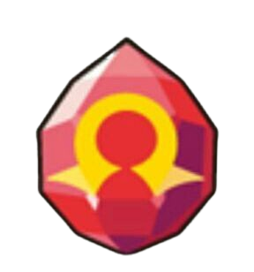

Groudon es un Pokémon de color rojo con unas franjas de color azul oscuro parecidas a las de Kyogre excepto por el color, lo que demuestra su contraste como Pokémon de la tierra y el mar. Su cola tiene forma de rastrillo. A pesar de ser el tercer Pokémon más pesado no es el mas grande, aunque es igualmente enorme
